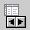

|

ナビゲーター
(Navigator component)

共通プロパティ (common properties)
ボタンプロパティ (button properties)
ボタンプロパティ
(button properties)
-
データソース (data source)：データソース選択。
-
(rows)：ボタン列数。
-
水平 (text horizontal position)：文字とアイコン
(icon) の相対的な位置。
-
垂直 (text vertical position)：文字とアイコン
(icon) の水平相対位置はセンター (center) の時，文字とアイコン (icon)
の垂直相対的な位置。
-
最初 (first)
 ：
最初に移ります。データは既に最初にある時，クリックしても使用不可能
(disabled) になっています。 ：
最初に移ります。データは既に最初にある時，クリックしても使用不可能
(disabled) になっています。
-
次 (next)
 ：次へ。データは既に最後にある時，クリックしても使用不可能
(disabled) になっています。
：次へ。データは既に最後にある時，クリックしても使用不可能
(disabled) になっています。
-
新規 (insert)
 ：
新規データ。新規モード (insert mode) 或いは編集モード (edit
mode)の時，クリックしても使用不可能
(disabled) になっています。 ：
新規データ。新規モード (insert mode) 或いは編集モード (edit
mode)の時，クリックしても使用不可能
(disabled) になっています。
-
編集 (edit)
 ：データソースを編集モード(edit mode)へ。 ：データソースを編集モード(edit mode)へ。
-
キャンセル (cancel)
 ：新規モード
(insert mode) 或いは編集モード (edit mode)をキャンセル。 ：新規モード
(insert mode) 或いは編集モード (edit mode)をキャンセル。
-
リオープン (reopen)
 ：データソースの
SQL コマンドを再度実行。 ：データソースの
SQL コマンドを再度実行。
-
クエリー (query)
 ：デフォルトクエリーフォームをオープン。 ：デフォルトクエリーフォームをオープン。
-
前の (previous)
 ：データは既に最初にある時，クリックしても使用不可能
(disabled) になっています。 ：データは既に最初にある時，クリックしても使用不可能
(disabled) になっています。
-
ラスト (last)
 ：データは既に最後にある時，クリックしても使用不可能
(disabled) になっています。 ：データは既に最後にある時，クリックしても使用不可能
(disabled) になっています。
-
削除 (delete)
：削除する時に，メッセージボックスが表示されます。
-
保存 (post)
 ：新規モード
(insert mode) と編集モード (edit mode) の時，クリックしても使用可能になっています。
(enabled)。 ：新規モード
(insert mode) と編集モード (edit mode) の時，クリックしても使用可能になっています。
(enabled)。
-
更新 (refresh)
 ：バッファー
(buffer) のデータ (record)から読み取り，関連コンポーネントを更新します。 ：バッファー
(buffer) のデータ (record)から読み取り，関連コンポーネントを更新します。
-
全部削除 (delete all)
 ：データソース全てのデータを削除します。
Bufferedデータソースに限ります。 ：データソース全てのデータを削除します。
Bufferedデータソースに限ります。
▲Top
▲Top
Copyright © 2001~
2004 Probe Technology . All Rights Reserved.
Questions, comments,
and suggestions to Service@probe.com.tw
|